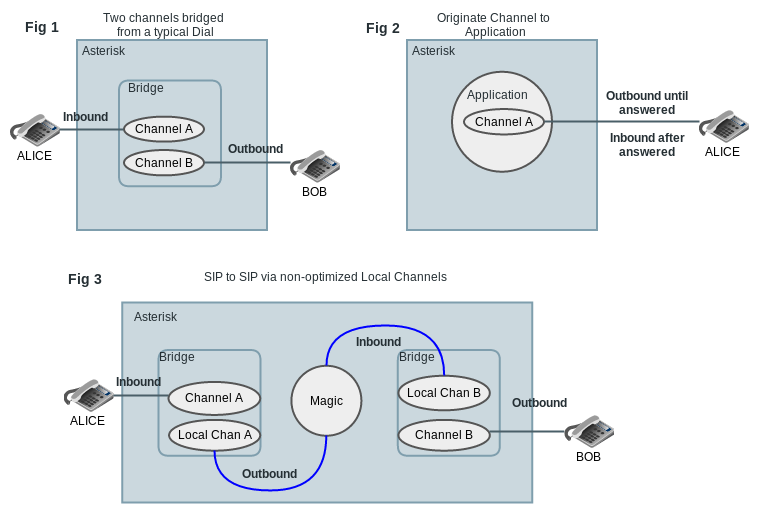

Asterisk Channels¶
Almost nothing happens in Asterisk without a channel being involved. A channel is an entity inside Asterisk that acts as a channel of communication between Asterisk and another device. That is, a phone, a PBX, another Asterisk system, or even Asterisk itself (in the case of a local channel).
Our documentation and many Asterisk users speak about channels in terms of "calls". A call can be one or more channels creating a path of communication or activity through the Asterisk system.
To give you an idea about what channels do, here are a few facts about them:
- Channel Drivers provide channels in Asterisk.
- Channels can interface with each other through bridges.
- Applications and functions can affect the state or attributes of a channel or its media stream.
- Channels are commonly passing audio between communication endpoints, but can pass other data, such as video or text messages.
- Channels execute instructions with dialplan, but can be controlled by other APIs (AGI,AMI,ARI) or interfaces (CLI).
Common Asterisk Channels¶
One of the many benefits of Asterisk is the capability to interface with as many different technologies as you have channel drivers! However, most administrators will only make use of a few types at a time.
Here are a few commonly used channel types:
- A SIP channel driver such as chan_sip or chan_pjsip.
- DAHDI channels provided by chan_dahdi.
- Local channels provided by chan_local. (This was moved into the core in Asterisk 12)
SIP channels are used to interface with SIP capable VOIP devices, such as phones, channel banks, other PBXs or Internet Telephony Service Providers.
DAHDI channels are used to interface with DAHDI drivers and PRI libraries. In this case chan_dahdi allows you to use any DAHDI capable devices, such as Digium's line of T1/E1/J1 interface cards.
Local channels are used for dialing inward to the system itself, allowing any Asterisk component that can dial to call directly into dialplan. This provides a sort of "fake" call that still executes real instructions.
Configuring Channels¶
Text File Configuration¶
Most channel drivers have an associated configuration file. Some channels may require the configuration of dependent resources for optimal operation. For example, SIP channels, configured in sip.conf or pjsip.conf use RTP resources which can be configured in rtp.conf.
The Channel Drivers configuration section contains information on configuring documented channel drivers. In other cases the configuration file itself contains configuration documentation.
Database Configuration¶
Flat text configuration isn't the only option. A few channel drivers provide support for the ARA (Asterisk Realtime Architecture) and can therefore pull configuration from a local or remote database. Use of the ARA requires configuration of additional resources and dependencies outside the channel drivers themselves.
Using, Controlling and Routing Channels¶
Once you have a channel driver configured, how does it get used? When do channels get created?
Here are a few scenarios where a channel could get created:
- A device configured in the channel driver communicates to Asterisk (e.g. over a network) that it wants to make a call.
- A user executes a command (such as Originate) to create a new channel.
- An existing channel executes dialplan that calls an application (such as Dial) to create a new channel.
- Asterisk receives API calls that create a new channel or channels.
Once a channel is established, the events that occur are channel technology-dependent. That is, whether audio, video or other data communication begins over the channel will depend on signaling that occurs over SIP, ISDN, H.323 or other protocols implemented via the channel driver.
When Asterisk has established a channel, Asterisk will use a combination of channel driver configuration and dialplan instruction to determine how the channel behaves. On top of that Asterisk can communicate with external programs synchronously or asynchronously to receive API calls for channel inspection, direction or manipulation.
Once channels are established and communicating between devices and Asterisk; where that data flows to depends on the channel type itself, its overall configuration, device specific configuration, signaling sent by the originating mechanism (a device, a command, an API call) and associated bridges. One or more channels could be talking to one or more channels over various bridges. What specifically Asterisk talks to on each channel is limited only by the technology implemented by the channel driver.
Inbound and Outbound Channels¶
Often in our documentation, troubleshooting and development discussions you'll see mention of inbound or outbound channels. It'll be helpful to define what that means here.
Inbound channels are channels created when things outside of Asterisk call into Asterisk. This is typically the channel executing Dialplan.
Outbound channels are channels created when Asterisk is calling out to something outside Asterisk.
The primary exception is with Local Channels. In the case of local channels, you'll typically have two local channel legs, one that is treated as outbound and the other as inbound. In this case both are really inside Asterisk, but one is executing dialplan and the other is not. The leg executing dialplan is the one treated as inbound.
Below we'll diagram a few examples for clarity.

The figures have been kept somewhat generic and should apply to most channel types. Each figure shows the final state of the call, rather than a sequence of events.
Below are explanations of the various figures.
Fig 1¶
One phone dials another phone; about as simple as it gets.
The inbound channel is created from Alice's phone calling Asterisk. Asterisk then calls the extension dialed by Alice by creating an outbound channel to talk to Bob. Once the call is established the two channels are put into a bridgeBridges.
Fig 2¶
A user runs the originate command from AMI, or maybe something like "channel originate SIP/Alice application playback demo-congrats" from the CLI. Asterisk creates an outbound channel to call the device specified (SIP/Alice). When answered, Asterisk begins treating the channel like an inbound channel and connects it to the specified dialplan application.
Fig 3¶
Perhaps a user runs originate again - but this time "channel originate SIP/Alice extension dialbob@internal" from the CLI. Where dialbob@internal contains dialplan telling Asterisk to dial outbound to SIP/Bob. At first, the created outbound channel would look like Fig 2 where it begins to be treated as inbound after the device answers the call. At that point, a number of things happen:
- Asterisk creates an outbound local channel into Asterisk and bridges it with the now inbound channel to Alice.
- Asterisk creates another leg of local channel as "inbound" into Asterisk to execute the dialplan at the extension specified with the originate. This local channel is essentially bridged with some magic to the other local channel.
- In our case the dialplan executes something like Dial(SIP/Bob), so the new SIP channel is created to communicate with SIP/Bob and is then bridged with the inbound local channel. Now communication flows across the whole path.
For this example demonstrating relationships between channels and other elements we used non-optimized local channels. If the local channels are optimized, then they will optimize themselves out of this mix and Alice and Bob's channels would be bridged together directly.
Channel Variable Inheritance¶
When working with channels you'll almost certainly be touching channel variables. It is useful to note that upon setting a channel variable the level of inheritance between channels can be defined. This is discussed in the Channel Variables sub-section Variable Inheritance.